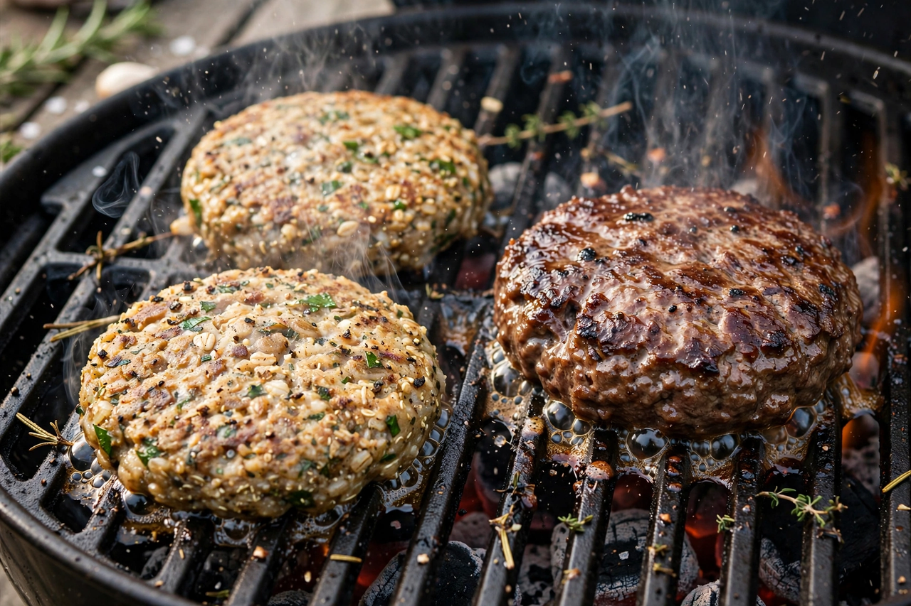

Meat alternative
From Wikipedia, the free encyclopedia

A meat alternative (or meat substitute) is a food product made from non-animal ingredients that approximates the taste, texture and use of meat. Traditional substitutes — tofu, tempeh, seitan, Quorn's mycoprotein — were joined from the 2010s by engineered plant-based meats (Impossible Foods, Beyond Meat) using soy or pea protein, coconut fat and (in Impossible's case) soy leghemoglobin 'heme' for blood-like flavour, and by the nascent sector of Cultured meat grown from animal cells.
Market and motives
Drivers are animal welfare, environment (livestock's large share of food emissions and land use) and health. The sector boomed in 2019–21 (Beyond Meat's IPO was the year's best debut) then contracted as repeat purchases disappointed on taste and price, inflation bit, and culture-war politics adopted the products as symbols; the industry's second act aims at whole cuts, better fats and price parity.
Assessment
Life-cycle analyses generally find plant-based meats far below beef in emissions and land use but above unprocessed plant proteins; nutrition comparisons are contested (processing versus saturated fat and sodium). Regulatory fights — over the words 'meat' and 'milk' on labels, novel-food approval for cultured meat (granted in Singapore 2020 and the US 2023) — frame the sector's uneven global reception.